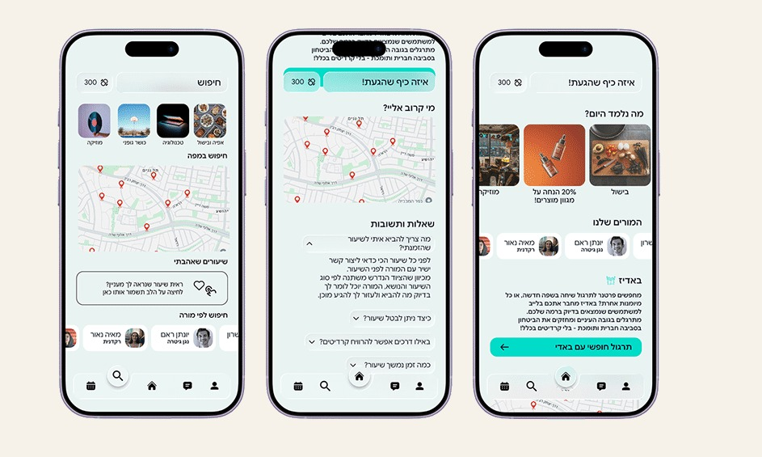

← All projects
Skillio
A skill-swapping app where people teach what they know and learn from each other, without paying.
Skillio connects people who want to learn with people who have something to teach. Instead of money, users trade skills through credits: teach someone, earn credits, then spend them to learn from someone else. The goal was a simple, friendly experience that gets people sharing what they know and building real connections.
- Type
- UX/UI case study, mobile app
- Process
- User research, market research, feature planning, UI design and prototype
- Tool
- Figma
Interactive prototype
Click through the app prototype, built in Figma.
Prefer a bigger view? Open it in Figma
Key screens
Home with today’s lessons and top teachers, search by topic or on a map of nearby lessons, and a Q&A screen that explains how lessons and credits work. The credit balance stays visible at the top of every screen.

Pain points and solutions
Swapping skills can feel unfairSolution: credits give every lesson a clear value, so different kinds of skills can be traded evenly.Learning costs moneySolution: a credit system replaces payment. Teach, earn credits, then learn.Personal skills go to wasteSolution: the app turns what you know into something you can trade for new knowledge.
User research
People want to learn new skills, but they don’t always want to, or can’t, pay for it. Many of them have knowledge they’d happily share in return.
So the experience had to be simple, easy to get into and built on trust, with a clear explanation of what you can do, how credits work and how to start.
Do you feel a need or wish to learn something new?
How likely are you to use a credit-based learning app? (1–5)
What matters most to you in a learning app?
Asking questions in real time and getting feedback from a real person83.3%
Hands-on practice, not just theory83.3%
Learning personal or niche topics that are hard to find online66.7%
The structure and commitment of learning live50%
User persona
WhoLior Levi, 30, from Kfar Yona. Married with two kids. He works as an assistant contractor at a construction company and has a degree in civil engineering.His storyNothing makes Lior happier than coming home and baking. He joined a few pizza workshops with friends and fell in love with it. He loves talking about baking and seeing people light up when they make something tasty.Why SkillioHe wants to teach sourdough, pizza and fresh pasta workshops. Skillio lets him turn his hobby into something meaningful, and use the credits he earns to learn something new himself.
Market research
FindingMost learning and skill-sharing platforms are built around paying for knowledge and courses.The twistOn Skillio everyone can be both a teacher and a learner, and credits work as the currency that makes the exchange possible.
Features
CriticalTeaching and learning: teach and learn, upload lessons and sign up for them.ImportantRatings and reviews with stars, to build trust between users. A built-in calendar to book in-person lessons without leaving for a chat.Nice to haveA personal profile page you can customise, including your profile picture.
Colours
Brand
#01DCC8 · RGB 1, 220, 200
Icons
#238A90 · RGB 35, 138, 144
Background
#E9F3F2 · RGB 233, 243, 242